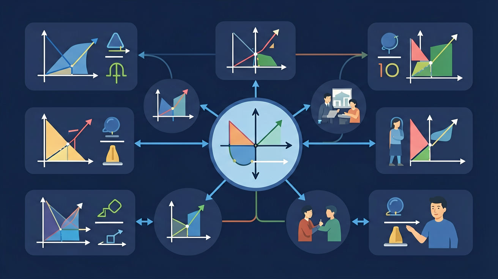

❓ 为什么反比例函数的图像是双曲线？
❓ k值变大时图像会怎样变化？
❓ 为什么不能和坐标轴相交？
学完这一课，这些问题你都能自信地回答。
🎯 能根据k值判断函数图像所在象限
🎯 能分析实际问题中的反比例关系
🎯 能计算反比例函数与直线的交点坐标

1. 下列哪个式子是反比例函数？
2. 反比例函数 y=6/x，当 x=2 时，y=？
3. 反比例函数中，x 不能等于？
关键条件：
✅ 是反比例函数
❌ 不是反比例函数
🏋️ 即时练习：下列是反比例函数的是？
| k范围 | 图象位置 | 各支变化趋势 |
|---|---|---|
| k > 0 | 一、三象限 | 各支内：x增大，y减小 |
| k < 0 | 二、四象限 | 各支内：x增大，y增大 |
| |k|越大 | 离原点越远 | 曲线越"宽" |
🏋️ 即时练习：反比例函数 y = -3/x 的图象在哪些象限？
例题：从家到学校距离 12 km，设速度为 x (km/h)，时间为 y (h)。
（1）写出函数关系式：y = 12/x（x>0）
（2）速度为 4 km/h 时，需要多久？y = 12/4 = 3（小时）
（3）想在 1.5 小时内到达，速度至少多少？1.5 = 12/x，x = 8（km/h）
🏋️ 即时练习：某矩形面积为 24 cm²，长为 x cm，宽为 y cm。当 x=6 时，y=？
工厂要生产 360 件产品，设每天生产 x 件，完成所需天数为 y 天。
1. 反比例函数 y=k/x（k>0），x 从 1 增大到 2 时，y 如何变化？
2. 若 y=k/x 过点 (-2, 3)，则 k = ？
3. 反比例函数图象的两支分别在哪两个象限（k>0）？
4. 反比例函数中，若 x₁ < x₂ < 0 且 k > 0，则 y₁ 与 y₂ 的大小关系？
反比例函数的图像是一条双曲线，它分布在第一和第三象限或第二和第四象限，具体取决于常数 k 的正负。当 k > 0 时，双曲线位于第一和第三象限；当 k < 0 时，双曲线位于第二和第四象限。例如，对于函数 y = 2/x，其图像位于第一和第三象限，且随着 x 的增大，y 逐渐趋近于 0，但永远不会等于 0。理解反比例函数的图像有助于我们更直观地把握函数的性质，如函数的增减性、渐近线等。
先独立作答，再点选项查看对错与错因。
当车位宽度调整为4米时，可停放多少辆车？
下列哪个图像正确反映了车位宽度与数量的关系？
若用x表示车位宽度(米)，y表示车位数，则关系式为：
当车位宽度为____米时，可停放60辆车
答案：2
120÷60=2
反比例函数y=k/x中，k值在本情境中表示____
答案：停车区总面积
k=xy=总占地面积
关于反比例函数y=6/x，说法正确的是：
调查不同车位宽度对车辆进出效率的影响
解析y=k/x中k和x的关系
k决定图像的形状和位置
对比正比例函数y=kx的图像差异
通过水箱排水问题理解反比例关系
用函数解释油箱剩余油量与行驶里程的关系
✅ k>0时图像仅在一、三象限
💡 忽略函数定义域x≠0
✅ 必须画出双曲线的两个分支
💡 与正比例函数图像混淆
口诀：k正一三k负二四，双曲线永不相交
类比：像拔河比赛，人数越多每人用力越小
函数y=6/x的图像经过哪些象限？
当x=0时，y=4/x的值是多少？
（中考题）若反比例函数y=(m-2)/x的图像在第二、四象限，则m的取值范围是？
某汽车油箱剩油量y(L)与行驶里程x(km)成反比，当x=200km时y=40L，求y与x的函数关系式
比较y=3/x与y=-2/x的图像特征，下列说法错误的是？
And：学生已掌握正比例函数和一次函数的基本概念
But：不理解为什么有的函数图像会分成两支曲线
Therefore：通过实例理解反比例函数的定义和图像特征
反比例函数是指两个变量的乘积为定值的函数，表达式为y=k/x（k≠0）。例如：当k=6时，函数y=6/x中，x=2对应y=3，x=3对应y=2，它们的乘积始终是6。图像是双曲线，永远不会与坐标轴相交。特别注意：当x趋近于0时，y值会无限增大（或减小），这就是为什么图像会分成两支。
🌍 汽车油箱的油量y（升）与行驶里程x（公里）的关系：假设百公里油耗8升，则y=油箱总量-0.08x。当油量剩余1/4时，仪表盘会亮起油表灯提醒加油，这个临界点就是反比例关系的实际应用。
已知反比例函数y=12/x，当x=4时y的值是？
💡 对比二次与反比例弯曲差异；也可用 GeoGebra 画 y=k/x。
外链：https://phet.colorado.edu/sims/html/graphing-quadratics/latest/graphing-quadratics_zh_CN.html
开放任务：用三步写出你如何向同学讲清「反比例函数」。